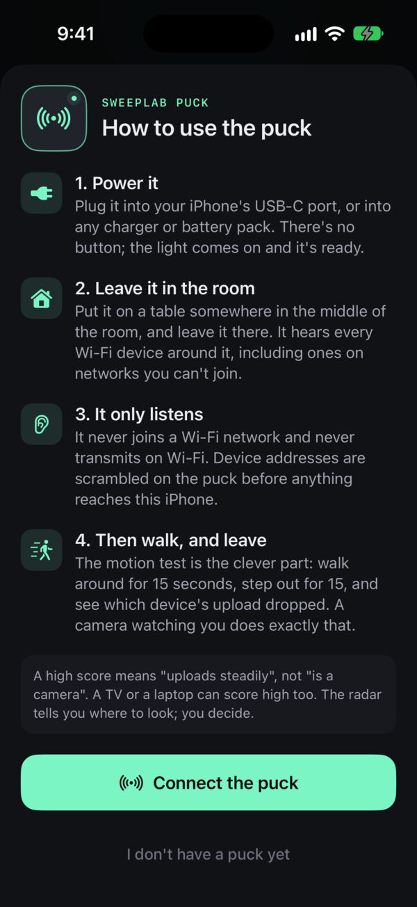

Telltale Puck
The Telltale Puck
A small, receive-only Wi-Fi listener that adds the Wi-Fi radar and the motion test to Telltale. It's optional: every other check works with just your iPhone. The puck isn't on sale yet.
01What it is
A listener, not a scanner
A camera streaming video uploads steadily, all the time. The puck sits in the room and listens to the Wi-Fi around it, on both the 2.4 GHz and 5 GHz bands, on every network in range, including ones you can't join. For each device it hears, it works out how much it uploads and how steadily, and gives it a score from 0 to 100 for how much that looks like a live video stream. Your iPhone shows the result on the signal ladder.
- It only listens. It never joins a Wi-Fi network and never transmits on Wi-Fi. Its only radio transmissions are Bluetooth, to talk to your iPhone.
- It never reads what's sent. It counts how much each device sends, never what. There's nothing to decrypt, because it never looks inside.
- It scrambles addresses on the spot. Only a scrambled ID and the maker prefix ever reach your iPhone. See how it handles data.
- It doesn't decide anything. A high score means "uploads steadily", not "is a camera". You decide what to go and look at.


02Power
Plug it into anything with USB-C
There's no button. Plug the puck in, the light comes on, and it's ready.
- A charger or computer
- Any USB-C charger, or a USB port on a computer. Best for a long check.
- A battery pack
- Handy when there's no socket near the middle of the room.
- Your iPhone
- The puck can run from your iPhone's USB-C port. The cable only powers it: the puck and the app always talk over Bluetooth. It runs your iPhone's battery down faster, so a charger or battery pack is better for anything but a quick check.
A version of the puck with its own battery is coming. When a puck reports its battery level, the app shows it on the puck's card and on the home screen.
03Connecting
Pair it with the app over Bluetooth
No code, no PIN
- Power the puck and keep it within a few metres of your iPhone.
- In Telltale, open Wi-Fi radar (the third tile on Home, or step 3 of the room check). The first time, How to use the puck explains the four steps.
- Tap Connect the puck. Allow Bluetooth when iOS asks. Telltale only uses Bluetooth to talk to the puck, and doesn't start it until you open the Wi-Fi radar.
- The app finds the puck on its own and connects. The card shows Telltale Puck and the pill at the top reads Paused or Listening.
Telltale remembers your puck and reconnects to it next time you open the app. If it drops out of range, the pill shows Reconnecting and the app waits for it to come back.
No puck? Tap I don't have a puck yet, and in the room check, I don't have a puck, skip.
04Using it
Leave it in the room, then walk, and leave
- Put it in the middle of the room, on a table, and leave it there. It hears every Wi-Fi device around it.
- Tap Listen and give it a minute. It visits each Wi-Fi channel in turn, then focuses on the busiest uploaders to measure them properly.
- Run the motion test: 15 seconds walking around, 8 seconds to leave, 15 seconds outside. A camera's upload shrinks when the room it watches goes empty and still. See the motion test.
- Find what scored high. Open a device and carry the puck slowly around the room: its signal number climbs as you get close. See one device.
On the Wi-Fi radar, Blink the puck flashes its light so you can find it, and More chooses the bands to listen on, starts a New session (a fresh scrambling key and an empty list), and opens the help.
05The light
What the puck's light means
The red blink is only a nudge to look at the app. In the app, anything scoring 50 or more is already worth a look.
06How it handles data
Passive, and built to forget
The puck is designed so that it can't join, disturb or read anyone's network, and so that what it does learn stays vague and short-lived.
- Receive only. Its Wi-Fi radio only listens. It never joins a network, never probes for one, and never sends anything on Wi-Fi, so it can't interfere with any network. It talks to your iPhone over Bluetooth, and to nothing else.
- Only the outside of each frame. From each Wi-Fi frame it hears, it notes how big it is, when it arrived, how strong it was, its type, the channel, and which transmitter sent it. It never reads, stores or passes on the contents, and decrypts nothing.
- Addresses scrambled on arrival. Each transmitter's address is scrambled the moment it's heard, with a random key the puck makes fresh for each session and keeps only in memory. Raw addresses are never stored or sent, and the scrambled IDs can't be matched across sessions. New session in the app makes a new key and clears the list.
- Only the maker prefix reaches your phone. Your iPhone receives the scrambled ID, the first three bytes of the address (the publicly registered prefix that identifies the maker), and the numbers: band, channel, signal, upload rate and score. Telltale turns the prefix into a maker name on your iPhone, from a list built into the app.
- Short memory. The puck keeps about the last minute of counts, in memory only. Nothing it hears is written to its storage; unplug it and it's gone.
- Range-limited. Transmitters too faint to plausibly be in or next to your room (weaker than about −80 dBm) are dropped as soon as they're heard.
The app's side is in the privacy policy: nothing is uploaded, and there's no account.
07Limits
What the puck can't tell you
- A score is not a verdict. A TV streaming, a laptop backing up, a phone on a video call or a smart speaker can score as high as a camera. The motion test is how you tell them apart.
- It can't hear every camera. Cameras that record to a memory card without streaming, cameras on a cellular SIM card, and wired cameras send nothing it can hear. A camera that's switched off isn't streaming either.
- It can miss some that do stream: a camera whose router is out of its range (about −80 dBm), and uploads that newer Wi-Fi 6 routers schedule together with other devices'.
- It can't always tell how close. Devices on fast 5 GHz networks may be heard only through the router's replies and show as signal unknown. It has one antenna, so it never knows the direction, and walls, mirrors and metal weaken signals.
- A quiet radar isn't proof. The lens scan, the infrared check and looking by hand are the backstop. See all the limits.
08Troubleshooting
When the puck won't play
- No light
- Try another cable, port or charger. Some battery packs switch off when the draw is small; a charger avoids that.
- Looking for the puck
- Keep it within a few metres of your iPhone and make sure Bluetooth is on. It connects on its own.
- Bluetooth isn't available
- Tap Open Settings, or go to Settings → Telltale and allow Bluetooth.
- Puck out of range
- The app waits and reconnects. Is it still powered?
- Nothing heard
- Tap Listen and give it a minute. Check More → Listen on has both bands.
- Which one is it?
- Tap Blink the puck.
Still stuck? Email redthoroughbreds@gmail.com.
↑ Back to top